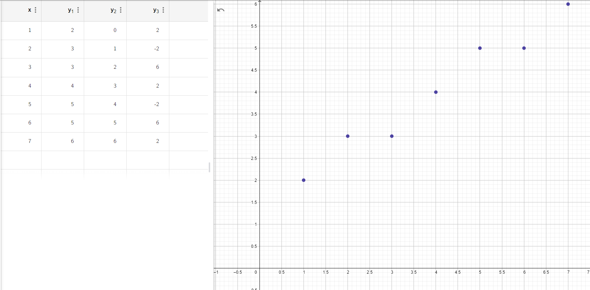
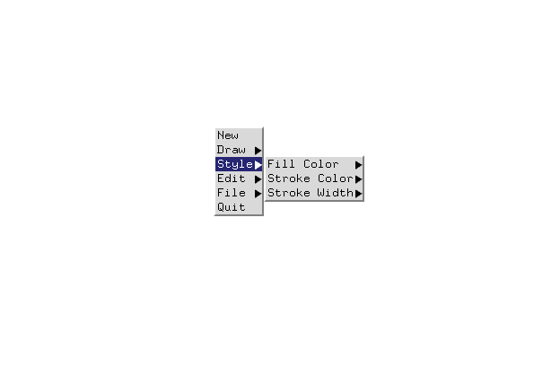
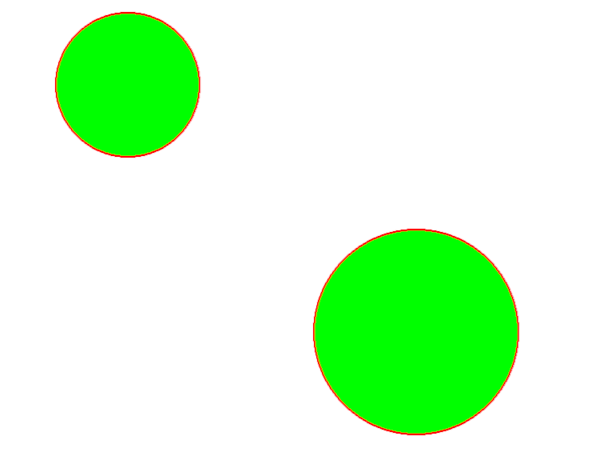
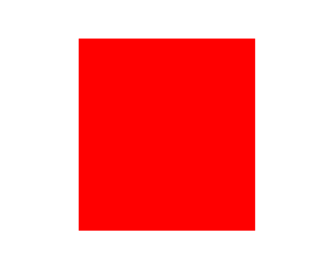
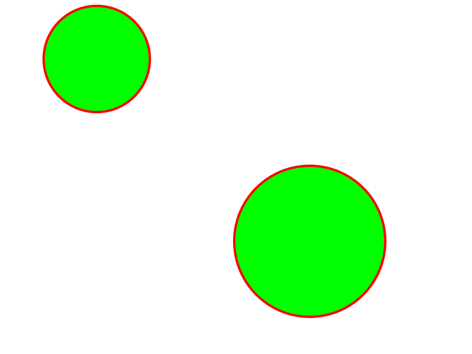

Author: Nausher Rao
Date: 01/10/22
Check readme.txt for course work statement and self-evaluation.
A graphics primitive are the most basic, essential, and barebones geometric shape elements that can be displayed on a screen. These are things that are native to OpenGL, and are non-interactive. These usually consist of lines, circles, arcs, rectangles, and dots.
The view-point, world, object, and screen coordinate systems are involved with the graphics pipeline.
x and y1 represent the coordinates, y2 represents k, and y3 represents p_k. 
Complete
Complete 
Complete 
Complete 
Complete 
Complete 
Complete 
Complete 
Complete 
Complete .
Complete  ,
,  .
.
References 1. CP411 a2